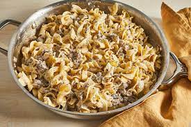

Beef Stroganoff

Description
Beef stroganoff is an easy, delicious, and flavorful dish that can be your next home cooked meal.
This recipe is made primarily with tenderloin and egg noodles, with onions, mushrooms, and garlic accompanying it.
Ingredients
- Salt and ground black pepper, to taste
- 8 ounces egg noodles
- 1 pound beef tenderloin, trimmed of fat and sliced
- 2 tablespoons extra-virgin olive oil
- 1/2 medium onion, sliced
- 4 ounces white mushrooms, sliced
- 1 tablespoon cornstarch
- 1 (10.5) can condensed beef broth, divided
- 1 teaspoon Dijon mustard
- 1 clove garlic, peeled and minced
- 3 tablespoons white wine
- 1/2 tablespoon Worcestershire sauce
- 2 tablespoons low-fat sour cream
- 2 tablespoons reduced-fat cream cheese
Steps
- Bring a large pot of lightly salted water to a boil over high heat. Cook noodles according to package instructions. Drain and reserve.
- Meanwhile, season meat with salt and pepper. Warm oil in a large skillet over medium heat. Add beef; brown on all sides and then push to one side of the pan.
- Add onion and mushrooms, cooking until tender, about 3 to 5 minutes. Push to the side with beef. In a small bowl, combine cornstarch with 2 tablespoons cold beef broth. Add to the skillet and mix with juices in the pan to deglaze.
- Pour in remaining beef broth. Bring to a boil, stirring frequently. Reduce the heat to low and stir in mustard, garlic, wine, and Worcestershire sauce. Cover with a tight-fitting lid and simmer for 10 minutes.
- Two minutes before beef is done, stir in sour cream and cream cheese. Stir well and allow beef to finish cooking in the sauce. Let meat rest 5 minutes and serve.